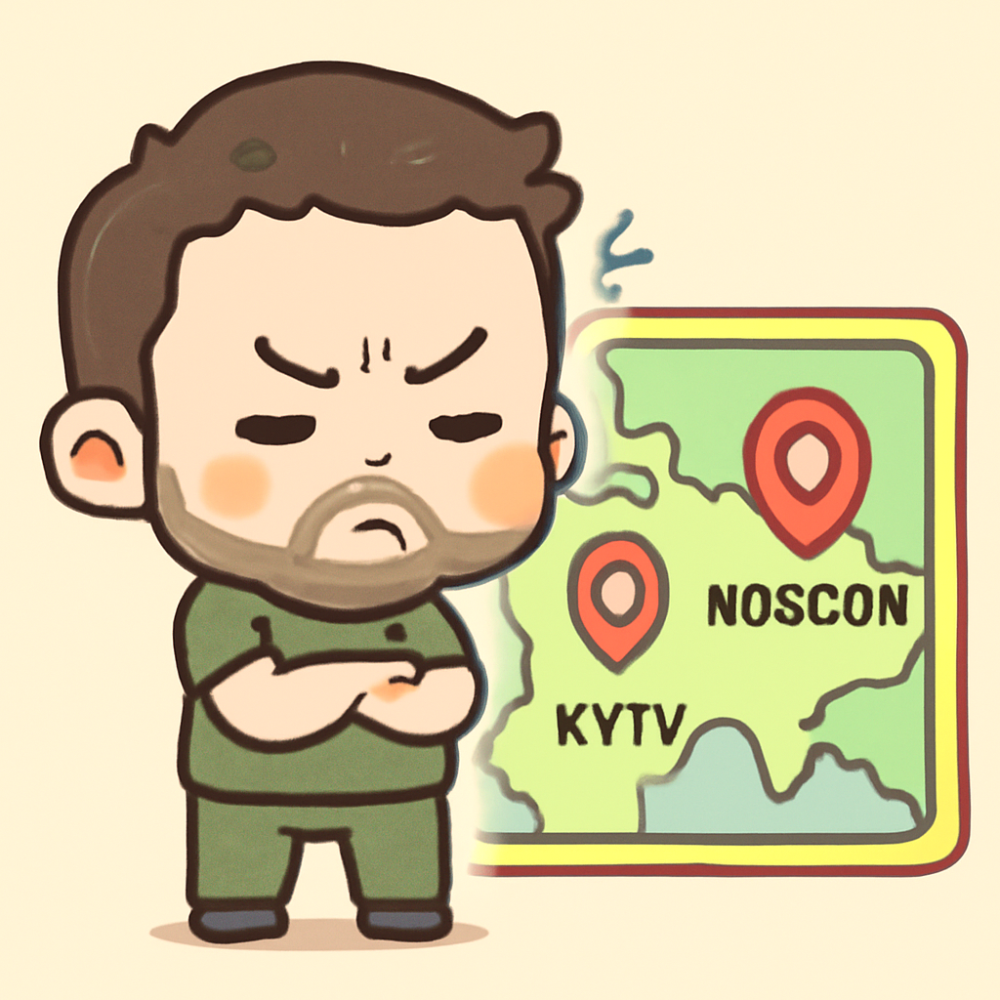
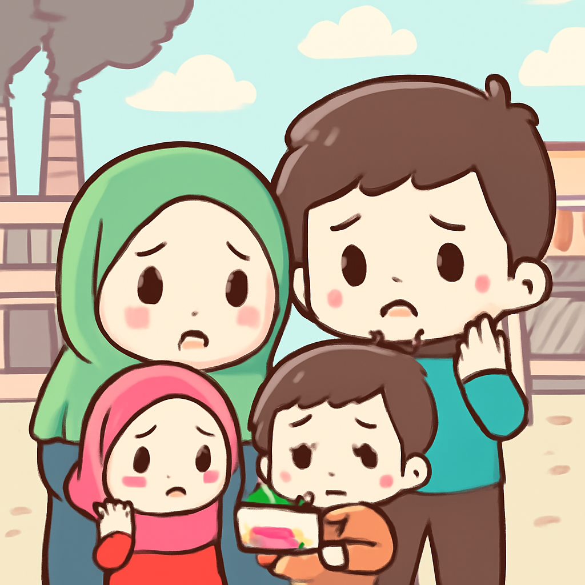

其一 · 美國華府 · 特朗普延長與伊朗的停火
美國總統特朗普延長與伊朗的停火協議。
在美國華府，特朗普政府決定延長與伊朗的停火協議，原本即將到期。這舉動不僅是為了避免戰爭升級，也是因為巴基斯坦希望調解雙方緊張關係。這意味著，兩國之間的緊張局勢可能還會繼續，但至少今天不會爆發新的衝突。說不定，特朗普只是想多點時間來研究如何拍攝下一季的《學徒》。
🔗 原始新聞 ↗
2026-04-22 · 以古觀今，以笑抗愁
美國總統特朗普延長與伊朗的停火協議。
在美國華府，特朗普政府決定延長與伊朗的停火協議，原本即將到期。這舉動不僅是為了避免戰爭升級，也是因為巴基斯坦希望調解雙方緊張關係。這意味著，兩國之間的緊張局勢可能還會繼續，但至少今天不會爆發新的衝突。說不定，特朗普只是想多點時間來研究如何拍攝下一季的《學徒》。
🔗 原始新聞 ↗
烏克蘭總統批評美方代表未訪基輔。

在烏克蘭基輔，總統澤倫斯基對美國高層未曾造訪表示不滿，認為這是對烏克蘭的不尊重。雖然美國派遣了多位代表到莫斯科，但基輔卻一直沒有得到同樣的重視。這提醒我們，外交關係有時候就像約會，總是要保持適當的平衡。希望美方能夠趕快安排一次基輔之行，免得澤倫斯基真的要發信給他們。
🔗 原始新聞 ↗
日本突破戰後和平主義，開始出口武器。
在日本東京，政府正式決定放寬武器出口限制，這是自二戰以來的一大變革。此舉使得日本可以將武器銷售給多達十幾個國家，顯示了日本在安全政策上逐漸轉變。對於這個傳統上以和平為重的國家來說，這是一個重要的里程碑。希望未來的武器不會跟壽司一樣，變得太受歡迎！
🔗 原始新聞 ↗
倫敦地鐵因司機罷工導致服務中斷。
在英國倫敦，地鐵司機因工作條件爭議開始罷工，這將影響到主要的地鐵路線，造成大規模的延誤和服務中斷。這個城市的通勤族們可能會面臨一場“慢速旅行”的冒險，而不是“高速列車”的日常。希望他們能夠早日達成共識，讓每個人都能順利到達目的地，而不是在地鐵裡上演一場“等車大賽”。
🔗 原始新聞 ↗
伊朗面臨大量裁員，經濟受戰爭影響。

伊朗的經濟因與美國及以色列的衝突而遭受重創，導致製造商、零售商及數位產業大量裁員。這場戰爭不僅影響了國家的穩定，還讓許多家庭陷入困境。隨著局勢的發展，未來的影響可能會更為嚴重。希望他們能找到和平的解決方案，讓人們可以專注於工作，而不是尋找生存的路。
🔗 原始新聞 ↗